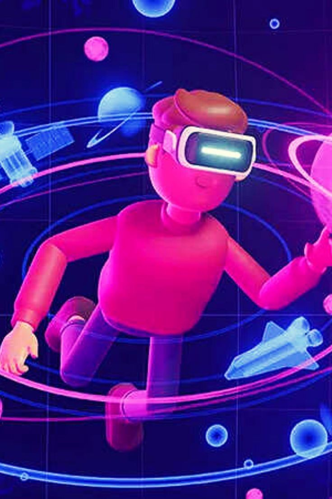

1. Introduction 🚀
1.1 Background
The advent of blockchain technology has revolutionized various sectors of the global economy, including finance, supply chain, and entertainment. The ability to create decentralized applications (DApps) on blockchain networks has led to the emergence of innovative solutions that address existing challenges in these sectors. FunValueCoin is one such solution, designed to merge the worlds of fun and value in a unique and engaging way.
1.2 Purpose of the Whitepaper
This whitepaper provides a comprehensive overview of FunValueCoin, including its vision, platform features, tokenomics, and roadmap. The purpose of this document is to provide potential users and investors with a clear understanding of the value proposition of FunValueCoin and its potential for growth and success in the blockchain industry.
1.3 Disclaimer
This whitepaper is for informational purposes only and does not constitute financial, legal, or other professional advice. Potential users and investors should seek independent professional advice before deciding to use the FunValueCoin platform or invest in the FunValueCoin token (FVC). Please note that investing in cryptocurrencies involves risk, and investors should only invest what they can afford to lose.
2. FunValueCoin Overview 🌐
2.1 What is FunValueCoin?
FunValueCoin is a revolutionary blockchain-based platform that aims to merge the worlds of fun and value in a unique and engaging way. Our platform leverages the power of blockchain technology to provide users with gamification, rewarding them for participation and creativity. At the heart of FunValueCoin is our native cryptocurrency, the FVC token, which fuels the platform, enabling users to access various features, participate in activities, and earn rewards.
2.2 The FunValueCoin Token (FVC)
The FunValueCoin token (FVC) is an ERC-20 token that is powered by a smart contract on the Ethereum blockchain. The FVC token serves multiple utilities on the FunValueCoin platform, including access to features, rewards and incentives, and trading. The smart contract includes mechanisms such as access control, a tax system, the ability to burn tokens, and functions for crisis management and token recovery.
2.3 The FunValueCoin Platform
The FunValueCoin platform is a vibrant and engaging platform that offers a range of features and applications. Users can create and share fun and entertaining memes, participate in contests and challenges, vote on various matters, and engage with the community. The platform also includes a trading platform where users can trade FVC tokens and other assets.
3. Vision 👁️
3.1 Our Mission
Our mission is to revolutionize the way people interact and engage with digital platforms by combining fun, creativity, and blockchain technology. We aim to provide users with a platform where they can express their creativity, participate in fun activities, and earn rewards, all powered by our native FVC token.
3.2 Our Values
We believe in the power of community and aim to build a vibrant and engaged user base. We value creativity and innovation and strive to provide users with a platform where they can express their creativity and earn rewards. We are committed to transparency and integrity and aim to build a platform that is trusted by users.
3.3 Future Plans
We have a clear vision for the development and expansion of FunValueCoin. Our future plans include the implementation of an advanced voting and reward system, the launch of our internal trading platform, and the introduction of multi-chain mechanisms. We also plan to continuously improve and update the platform based on user feedback and market requirements.
4. Platform Features 🎁
4.1 User Interaction
The FunValueCoin platform offers a range of features that enable user interaction. Users can create and share memes, participate in contests and challenges, vote on various matters, and engage with the community.
4.2 Gamification
One of the key features of FunValueCoin is the aspect of gamification. We have implemented a comprehensive reward system, leaderboards, achievements, and tasks to keep users motivated and engaged.
4.3 Voting and Rewards
The FunValueCoin platform includes a voting system where users can vote on various matters. Users can earn rewards for participating in voting and other activities on the platform.
4.4 Trading Platform
The FunValueCoin platform includes a trading platform where users can trade FVC tokens and other assets. The trading platform is designed to be user-friendly and secure.
4.5 Multi-chain Mechanisms
We plan to introduce multi-chain mechanisms to expand the capabilities and optimize interactions on the platform. This will enable users to interact with multiple blockchains, increasing the versatility and utility of the platform.
5. Tokenomics 💹
5.1 Token Distribution
The total supply of FVC tokens is 1,000,000,000. The distribution of the tokens is as follows:
- 50% - Public Pre-sale
- 5% - Team and Advisors
- 15% - Community Programs and Rewards
- 5% - Strategic Partnerships
- 25% - Exchange (DEX,CEX) Liquidity
5.2 Token Utility
The FVC token serves multiple utilities on the FunValueCoin platform:
- **Access to Features**: FVC tokens are used to access various features on the platform, such as participating in contests and challenges, voting, and unlocking exclusive features and privileges.
- **Rewards and Incentives**: FVC tokens are used as rewards for user participation and creativity. Users can earn FVC tokens by creating and sharing memes, participating in contests and challenges, voting, and engaging with the community.
- **Trading**: FVC tokens can be traded on the platform's internal trading platform, providing users with a way to earn profits from their FVC holdings.
5.3 Smart Contract Details
The FunValueCoin token (FVC) is an ERC-20 token that is powered by a smart contract on the Ethereum blockchain. The smart contract has been designed with security and flexibility in mind, using the OpenZeppelin library, which is a standard for secure smart contract development. The contract includes mechanisms such as access control, a tax system, the ability to burn tokens, and functions for crisis management and token recovery. All these features align with our intention of creating a secure and trusted environment for our users.
6. Roadmap 🗺️
Our roadmap provides a clear vision of the development and expansion of FunValueCoin. Our action plan includes the launch of the platform with an initial set of features, followed by continuous improvements and updates based on user feedback and market requirements. We plan to expand our ecosystem by collaborating with other projects and exploring partnership opportunities.
7. Community and Marketing 📣
7.1 Community Development
We believe in the power of community and aim to build a vibrant and engaged user base. We plan to implement various community programs and rewards to incentivize user participation and engagement. We also plan to conduct regular community meetings and Q&A sessions to keep our community informed and engaged.
7.2 Marketing Strategy
Our marketing strategy includes a mix of online and offline marketing activities, including social media marketing, content marketing, influencer marketing, PR, and events. We aim to reach a global audience and attract users to our platform.
7.3 Partnerships and Collaborations
We plan to collaborate with other projects and explore partnership opportunities to expand our ecosystem and provide more value to our users.
8. Security and Compliance 🔒
8.1 Security Measures
Security is of utmost importance to us. We have implemented advanced security measures, including smart contract audits, regular security checks, and encryption protocols, to ensure the security of user funds and data. We are also exploring the integration of AI-based security mechanisms to detect and prevent spam and fraudulent activities.
8.2 Compliance
We are committed to complying with all relevant laws and regulations in the jurisdictions we operate in. We are working with legal advisors to ensure our platform and operations are fully compliant.
9. Conclusion 🏁
FunValueCoin aims to revolutionize the way people interact and engage with digital platforms by combining fun, creativity, and blockchain technology. We believe in the power of community and aim to build a vibrant and engaged user base. We invite you to join us on this exciting journey as we change the future of fun and value!
10. References 📚
[1] Ethereum. (n.d.). Ethereum is a global, open-source platform for decentralized applications. Retrieved from ethereum.org
[2] OpenZeppelin. (n.d.). OpenZeppelin: Secure, tested and community-audited code for Ethereum. Retrieved from openzeppelin.com